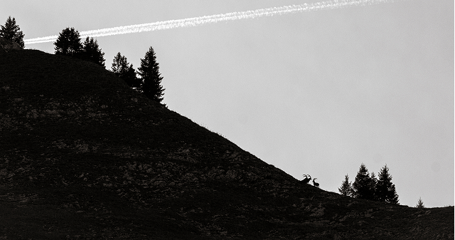
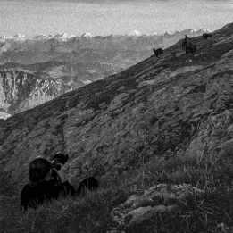

L'écho de la peur
Un cri effacé par le temps, une montagne sans écho, puis, le
retour du vivant. Autrefois chassé jusqu’à disparaître de nos
Alpes, le bouquetin est aujourd’hui la preuve vivante de la
force et de la résilience de la nature.
Ce voyage en noir et blanc en est le souffle.
Ce voyage en noir et blanc en est le souffle.




Making - off
La montagne, aussi majestueuse que mélancolique, m’a offert ce
jour-là l’un des plus beaux moments de ma vie. Sa face semblait
plus insurmontable que prévu, mais l’adrénaline et l’espoir d’un
destin incertain ont pris le dessus, transformant le hasard de
cette rencontre en une leçon de vie.
De là-haut, tout devient possible


